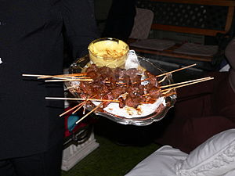
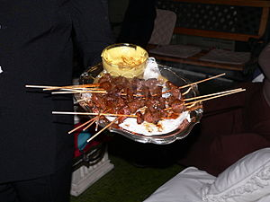

Técnico en Programación Visual
La gastronomía del Perú es de las más diversas del mundo, como lo demuestra el hecho que es el país con mayor número de platos típicos en el mundo(491),[1] y según varios entendidos alcanza un nivel equivalente al de la comida francesa, china e India.
La cocina peruana resulta de la fusión inicial de la tradición culinaria del antiguo Perú —con sus propias técnicas y potajes— con la cocina española en su variante más fuertemente influenciada por la presencia morisca en la Península Ibérica y con importante aporte de las costumbres culinarias traídas de la costa atlántica del África subsahariana por los esclavos. Posteriormente, este mestizaje se vio influenciado por los usos y costumbres culinarios de los chefs franceses que huyeron de la revolución en su país para radicarse, en buen número, en la capital del virreinato del Perú. Igualmente trascendental fue la influencia de las inmigraciones del siglo XIX, que incluyó chinos cantoneses, japoneses e italianos, entre otros orígenes principalmente europeos.
- Bienvenida con Pisco Sour
- Anticuchos para picar
- Ceviche para picar
Como particularidad exclusiva de la gastronomía del Perú, existen comidas y sabores de cuatro continentes en un solo país y, esto, desde la segunda mitad del siglo XIX.
 
